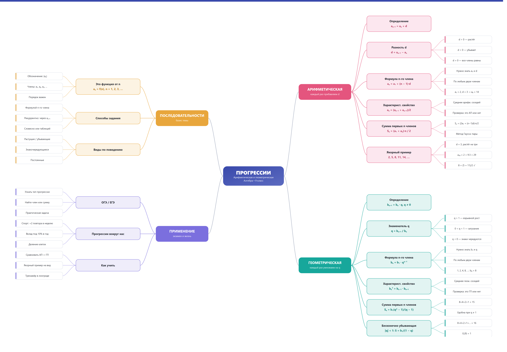

🎬 Видео 1. «Арифметическая прогрессия. Формула n-го члена» — МАТЕМАТИКА ШКОЛА OnLine, 15 мин. Источник: rutube.ru
Мультимедийный лонгрид-занятие: читаем, смотрим, проверяем себя на тренажёре и собираем всю тему в одну опорную карту. Модель «перевёрнутый класс»: теория — до урока, практика — вместе.
Это веб-страница самостоятельного занятия (лонгрид). Пройдите её от начала до конца — и тема «Арифметическая и геометрическая прогрессии» соберётся в голове в одну понятную систему.
После работы с лонгридом читатель различает два вида закономерностей числовых рядов, находит любой член и сумму членов по формулам и объясняет, где это работает в жизни.
Математикам часто не важно где стоит число — важно, на каком месте оно стоит. Аня садится первой в маршрутке — и получает место №1; Боря вторым — место №2. Каждому натуральному числу 1, 2, 3, … сопоставлено своё число. Это и есть числовая последовательность: функция натурального аргумента, где n — номер члена, а aₙ — член с этим номером.
Числовая последовательность — это функция, заданная на множестве натуральных чисел: каждому n = 1, 2, 3, … сопоставлено число aₙ. Записывают: (aₙ): a₁, a₂, a₃, …
Теперь главное: среди всех последовательностей две семьи устроены особенно честно и предсказуемо — с постоянным приращением и с постоянным множителем. Смотрите, как по-разному ведут себя числа одних и тех же начальных значений:
Только два типа последовательностей будут героями этого занятия — прогрессии. Всё остальное (точные квадраты, числа Фибоначчи и прочие) — знакомые «фоновые» последовательности, с которыми их удобно сравнивать.
Арифметическая прогрессия (АП) — последовательность, в которой каждый член, начиная со второго, равен предыдущему, сложенному с одним и тем же числом d: an+1 = an + d.
Число d — разность прогрессии. Оно и задаёт «характер» всего ряда:
an+1 = an + d
определяют «правилом шага», тоже формула
an = a1 + (n−1)d
любой член без всей прогрессии
Sn = (a₁+aₙ)·n/2
средняя арифметическая краёв × количество
Любой член АП (кроме крайних) — это среднее арифметическое своих соседей-крайних:
an = (an−1 + an+1) / 2 — любой член есть среднее арифметическое своих соседей. Проверяем ряд 3, 5, 8, 11: (5 + 11)/2 = 8 ✓ — это АП. А вот для 1, 2, 4: (1 + 4)/2 = 2,5 ≠ 2 — значит, это не АП!
Учитель задал девятилетнему Карлу Гауссу сложить все числа от 1 до 100. Гаусс заметил: 1 + 100 = 101, 2 + 99 = 101, 3 + 98 = 101… Пары дают одну и ту же сумму, а таких пар 100/2 = 50. Ответ: 50 · 101 = 5050 — за минуту, «в уме». Это и есть формула суммы АП, найденная раньше, чем её выучили.
Геометрическая прогрессия (ГП) — последовательность ненулевых чисел, в которой каждый член, начиная со второго, получается умножением предыдущего на одно и то же число q ≠ 0: bn+1 = bn · q.
| Примеры членов | Знаменатель q | Поведение |
|---|---|---|
| 1, 2, 4, 8, 16, … | q = 2 | взрывной рост — «снежный ком» |
| 27, 9, 3, 1, … | q = 1/3 | затухание к нулю |
| 5, −10, 20, −40, … | q = −2 | рост + чередование знаков |
| 6, 6, 6, 6, … | q = 1 | постоянный ряд (ГП-вырождение) |
Если |q| < 1, члены неустанно тают — и тогда их бесконечная сумма имеет смысл и равна:
S = b1 / (1 − q) при |q| < 1.
Пример: 8 + 4 + 2 + 1 + ½ + … с q = ½: S = 8/(1 − ½) = 16. Отсюда же знаменитое 0,99999… = 1: это сумма 0,9 + 0,09 + 0,009 + …
Веками пересказывают историю про изобретателя шахмат: за изобретение он попросил скромно — одно зерно за первую клетку, два за вторую, четыре за третью… Каждая клетка — умножение на 2, то есть геометрическая прогрессия. На 64-й клетке требовалось 2⁶³ ≈ 9,2·10¹⁸ зёрен — такого количества пшеницы не найти во всех урожаях планеты за многие века. Скромная просьба оказалась разорительной для королевства!
Обе прогрессии — одна и та же идея («каждый следующий член получается из предыдущего по постоянному правилу»), только правило разное. Проще всего держать их рядом:
| Признак | Арифметическая | Геометрическая |
|---|---|---|
| Правило | прибавляем d | умножаем на q |
| Рекуррентный вид | an+1 = an + d | bn+1 = bn · q |
| N-й член | an = a1 + (n−1)d | bn = b1·qn−1 |
| Сумма Sₙ | Sn = (a₁ + aₙ)·n / 2 | Sn = b₁(qⁿ−1)/(q−1) |
| Свойство | член = среднее арифметическое соседей | член в квадрате = произведение соседей (среднее геометрическое) |
| Особый случай | d = 0: ряд постоянный | q = 1: ряд постоянный; |q| < 1: сумма сходится |
| В мире | линии, ступени, оплата за отработанные смены | проценты, деление клеток, рост «снежного кома» |
Слышите «на столько-то» (на 3, на 10, на шаг) → это разность d, арифметическая прогрессия. Слышите «во столько-то раз» (в 2 раза, в 10%, q = 1,1) → это знаменатель q, геометрическая.
Вся тема собрана в одну карту: в центре — понятие «прогрессии», справа два «научных» ствола с формулами, слева — базис и применение. Опорный конспект для быстрого повторения: три минуты до начала урока — и весь аппарат освежен.

Папа положил на вклад 10 000 ₽ под 10% в год. Родители спорят: «до 20 000 ₽ нужно ждать 10 лет» — говорит мама. Папа считает, что хватит восьми лет. Кто прав?
Условие: за первую клетку — 1 зерно, за вторую — 2, за третью — 4, … Сколько зёрен окажется на 64-й клетке и чем грозит такая «скромная просьба» миру?
Это задача формулы n-го члена ГП: bₙ = b₁·qn−1 при b₁ = 1, q = 2.
Выберите вариант в каждой задаче и нажмите «Проверить». После проверки откроется разбор каждого пункта.
Самый сложный для меня момент сегодня · один пример из моей жизни на АП или ГП · что спрошу у учителя на уроке:
Текст сохраняется только в вашем браузере, отправлять никуда не надо.